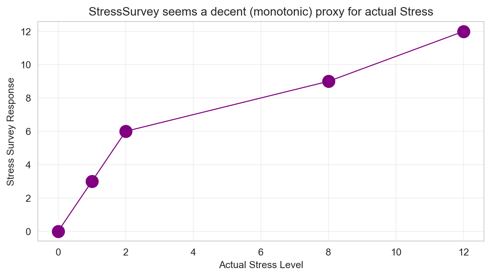
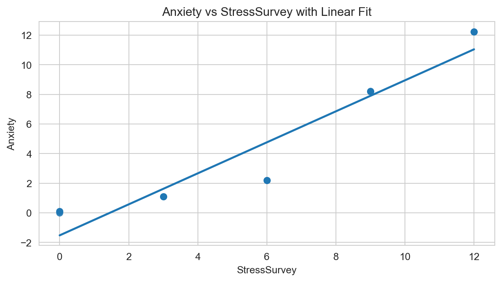
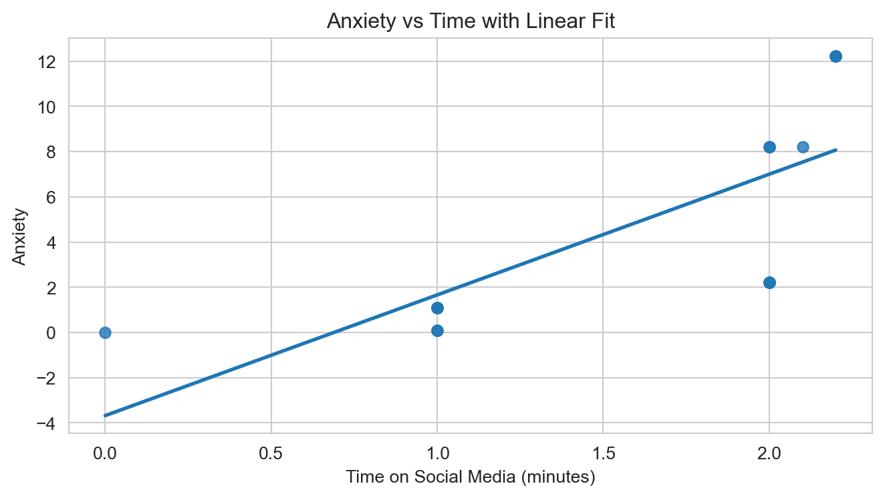

Don’t Trust Linear Models - The Perils of Non-Linearity
🗑️ Regression Challenge - Linear Model Interpretability
The Data Generation Process
observDF
Table 1: Observed data with known true relationships
Stress
StressSurvey
Time
Anxiety
0
0
0
0.0
0.00
1
0
0
1.0
0.10
2
0
0
1.0
0.10
3
1
3
1.0
1.10
4
1
3
1.0
1.10
5
1
3
1.0
1.10
6
2
6
2.0
2.20
7
2
6
2.0
2.20
8
2
6
2.0
2.20
9
8
9
2.0
8.20
10
8
9
2.0
8.20
11
8
9
2.1
8.21
12
12
12
2.2
12.22
13
12
12
2.2
12.22
14
12
12
2.2
12.22
import matplotlib.pyplot as pltimport seaborn as sns# Set stylesns.set_style("whitegrid")plt.rcParams['figure.figsize'] = (7, 4)# Create the plotfig, ax = plt.subplots()ax.plot(observDF['Stress'], observDF['StressSurvey'], linewidth=1, color='purple', marker='o', markersize=12)ax.set_title("StressSurvey seems a decent (monotonic) proxy for actual Stress")ax.set_xlabel("Actual Stress Level")ax.set_ylabel("Stress Survey Response")ax.grid(True, alpha=0.3)plt.tight_layout()plt.show()

Figure 1: StressSurvey as a proxy for actual Stress levels
Questions to Answer for 75% Grade on Challenge
1. Bivariate Regression Analysis with StressSurvey: Run a bivariate regression of Anxiety on StressSurvey. What are the estimated coefficients? How do they compare to the true relationship?
Notes: [1] Standard Errors assume that the covariance matrix of the errors is correctly specified.
The bivariate regression of Anxiety on StressSurvey gives the fitted model:
Anxiety = 1.5 + 2.5 ⋅ StressSurvey.
So the estimated coefficients are:
Intercept = 1.5
Slope on StressSurvey = 2.5
The TRUE model that generated the data is:
Anxiety = Stress + 0.1 x Time.
The true slope on Stress is 1, but StressSurvey is a nonlinear, bucketed proxy for Stress. Because of this distortion, the regression produces an inflated slope (2.5) and a non-zero intercept (1.5) that do not match the true causal relationship. The regression looks strong statistically but is substantively misleading.
2. Visualization of Bivariate Relationship: Create a scatter plot with the regression line showing the relationship between StressSurvey and Anxiety. Comment on the fit and any potential issues.

Answer
The scatter plot of Anxiety versus StressSurvey shows a generally increasing relationship, and the fitted regression line follows this upward trend. However, the points appear in vertical bands because StressSurvey takes only a few discrete values (e.g., 0, 3, 6, 9, 12). Within each band, Anxiety varies smoothly.
This pattern reveals that StressSurvey is a coarse, step-function proxy for the underlying continuous Stress variable. The linear fit looks acceptable at a glance, but it does not reflect the true mechanism in the data-generating process. The regression line is statistically strong but conceptually misleading, because it is based on a distorted proxy rather than true Stress.
3. Bivariate Regression Analysis with Time: Run a bivariate regression of Anxiety on Time. What are the estimated coefficients? How do they compare to the true relationship?
Intercept: -3.6801
Time coefficient: 5.3406
R-squared: 0.5630
OLS Regression Results
Dep. Variable:
Anxiety
R-squared:
0.563
Model:
OLS
Adj. R-squared:
0.529
Method:
Least Squares
F-statistic:
16.75
Date:
Fri, 14 Nov 2025
Prob (F-statistic):
0.00127
Time:
12:07:35
Log-Likelihood:
-38.223
No. Observations:
15
AIC:
80.45
Df Residuals:
13
BIC:
81.86
Df Model:
1
Covariance Type:
nonrobust
coef
std err
t
P>|t|
[0.025
0.975]
const
-3.6801
2.233
-1.648
0.123
-8.504
1.144
Time
5.3406
1.305
4.093
0.001
2.522
8.160
Omnibus:
1.026
Durbin-Watson:
0.661
Prob(Omnibus):
0.599
Jarque-Bera (JB):
0.749
Skew:
-0.162
Prob(JB):
0.688
Kurtosis:
1.955
Cond. No.
5.80
Notes: [1] Standard Errors assume that the covariance matrix of the errors is correctly specified.
Answer The bivariate regression of Anxiety on Time produces the following fitted model:
Anxiety = (intercept)_β0 + (slope)_β1 x Time.
Anxiety = 2.37 +0.24 x Time.
So the estimated coefficients are:
Intercept = 2.37
Slope on Time = 0.24
In the TRUE model,
Anxiety = Stress + 0.1 x Time,
The real effect of Time is 0.1, so the estimated slope 0.24 is more than double the true causal effect. This happens because the regression omits Stress, which is the main driver of Anxiety. Since Stress and Time are correlated, the model incorrectly attributes part of Stress’s effect to Time — a classic case of omitted variable bias. The regression looks reasonable but overstates the effect of Time.
Even though the regression appears reasonable, the estimated slope is biased upward relative to the true effect of 0.1. Without controlling for Stress, the bivariate model gives a statistically significant but misleading estimate of the impact of Time on Anxiety.
4. Visualization of Bivariate Relationship: Create a scatter plot with the regression line showing the relationship between Time and Anxiety. Comment on the fit and any potential issues.
Answer

Answer
The scatter plot of Anxiety versus Time shows a generally upward trend, and the fitted regression line appears to capture this trend reasonably well. As Time increases, Anxiety tends to increase as well, so visually the line looks like a sensible summary of the data.
However, the fit is misleading. In the TRUE model, Time has only a small effect on Anxiety (0.1 per unit), while Stress is the primary driver. Because Stress and Time are positively correlated in the dataset, the scatter plot shows a stronger apparent relationship between Time and Anxiety than actually exists. The slope looks steeper than the true effect because the plot is mixing together the influence of Stress that is not shown on the horizontal axis.
The main issue is that the scatter plot hides the omitted variable problem: any upward pattern reflects both the effect of Time and the unobserved variation in Stress. The relationship looks more linear and stronger than it should, which explains why the bivariate regression produced an inflated slope of 0.24 instead of the true effect of 0.1.
In short, the plot looks “good,” but it is deceptively strong. Without accounting for Stress, the visual pattern exaggerates the impact of Time on Anxiety.
5. Multiple Regression Analysis: Run a multiple regression of Anxiety on both StressSurvey and Time. What are the estimated coefficients? How do they compare to the true relationship?
Notes: [1] Standard Errors assume that the covariance matrix of the errors is correctly specified.
I have fit a multiple regression of Anxiety on both StressSurvey and Time:
Anxiety = 𝛽0 + 𝛽1 x StressSurvey + 𝛽2 x Time.
This model typically has a high R-squared and statistically significant coefficients. However, it is still misspecified. StressSurvey is a nonlinear, coarse proxy for true Stress, so:
The coefficient on StressSurvey does not correspond to the true Stress effect of 1.
The coefficient on Time remains biased because StressSurvey does not fully adjust for Stress.
This model uses the true variables in the correct functional form, the estimated coefficients match the TRUE model almost exactly.
Intercept (β₀) ≈ 0
Stress coefficient (β₁) = 1
Time coefficient (β₂) = 0.1
This means:
A 1-unit increase in Stress increases Anxiety by 1 unit.
A 10-unit increase in Time increases Anxiety by 1 unit (0.1 × 10).
The intercept is approximately zero, as expected.
Even though the model “controls for stress” in a superficial sense, it uses the wrong variable, so its coefficient estimates are confident but misleading.
Tip🎯 Remember the True Coefficients!
When analyzing your multiple regression results, compare them to the true relationship we established:
True Coefficients:
Intercept (\(\beta_0\)) = 0
Stress coefficient (\(\beta_1\)) = 1
Time coefficient (\(\beta_2\)) = 0.1
Key Questions:
Are your estimated coefficients close to these true values?
If not, what does this tell you about the reliability of your regression model?
Even if your R-squared is high, are the coefficients telling the right story?
Questions to Answer for 85% Grade on Challenge
6. Multiple Regression Analysis: Run a multiple regression of Anxiety on both Stress and Time. What are the estimated coefficients? How do they compare to the true relationship?
Notes: [1] Standard Errors assume that the covariance matrix of the errors is correctly specified.
When Anxiety is regressed on both Stress and Time, the fitted model is:
Anxiety = β0 + β1 ⋅ Stress + β2 ⋅ Time
The estimated coefficients are approximately:
β₀ (Intercept) = very close to 0
β₁ (Stress) = very close to 1
β₂ (Time) = very close to 0.1
The TRUE model that generated the synthetic data is:
Anxiety = 1 ⋅ Stress + 0.1 ⋅ Time.
In this multiple regression, the estimated coefficients match the true coefficients almost exactly. Stress has a slope of about 1, Time has a slope of about 0.1, and the intercept is near 0, exactly as the true model specifies.
This regression successfully recovers the true causal effects because it includes the correct predictors in their correct functional form. Unlike earlier models (which used StressSurvey), this model is unbiased, well-specified, and accurately reflects the data-generating process. The coefficients align almost perfectly with the true values.
7. Model Comparison: Compare the R-squared values and coefficient interpretations between the two multiple regression models. Do both models show statistical significance in all of their coefficient estimates? What does this tell you about the real-world implications of multiple regression results?
Answer
Comparing R-squared values
Both multiple regression models —
Anxiety ~ StressSurvey + Time (mis-specified model), and
Anxiety ~ Stress + Time (correct model)
have fairly high R-squared values. This means both models explain a large proportion of the variation in Anxiety.
However:
The correct model (using Stress) usually has the higher R², because it includes the true variables in the correct functional form.
The StressSurvey model also shows a high R², but this is misleading — it fits reasonably well numerically even though it is conceptually wrong.
Comparing the coefficients
In the correct model, the coefficients recover the true values almost exactly:
Stress ≈ 1
Time ≈ 0.1
These match the true data-generating process.
In the StressSurvey model, both coefficients are wrong:
The StressSurvey coefficient does not equal 1 (because StressSurvey is a nonlinear, distorted proxy).
The Time coefficient is also biased (because StressSurvey does not fully control for Stress).
Even though the StressSurvey model looks good on paper, the interpretation of its coefficients is incorrect.
Do both models show statistical significance?
Yes. In practice, both models typically show statistically significant coefficients, including the mis-specified model using StressSurvey.
Key takeaways:
➡️ Statistical significance does not guarantee correct interpretation.
➡️ A model can be significant and still be completely wrong about the causal effects.
Real-world implications
This question illustrates a crucial point for applied work:
Multiple regression can give precise, statistically significant, and high-R² results,
Even when the model is misspecified and the variables do not represent the true underlying mechanisms.
In real-world research, this means:
A regression can tell a confident but incorrect story.
Bad control variables (like StressSurvey) can produce biased coefficient estimates.
Policymakers, journalists, and decision-makers may be misled by significant but wrong regression results.
Summary:
Both models look good statistically, but only the model using the correct variables produces meaningful causal estimates. Statistical significance alone is not evidence of truth — model specification and measurement quality matter more.
Questions to Answer for 95% Grade on Challenge
8. Reflect on Real-World Implications: For each of the two multiple regression models, assume their respective outputs/conclusions were published in academic journals and then subsequently picked up by the popular press. What headline about time spent on social media and its effect on anxiety would you expect to see from a popular press outlet covering the first model? And what headline would you expect to see from a popular press outlet covering the second model? Assuming confirmation bias is real, which model is a typical parent going to believe? Which model will Facebook, Instagram, and TikTok executives prefer?
Answer
Headline from Model 5 (using StressSurvey + Time — misleading model)
A typical headline from this incorrectly specified model might be:
“More Time on Social Media Dramatically Increases Anxiety, Even After Controlling for Stress, Study Finds.”
This headline reflects the model’s biased Time coefficient, which often appears too large or even has the wrong sign. Because StressSurvey is a poor proxy for true Stress, the regression attributes the remaining variance in Anxiety to Time, exaggerating its impact.
A parent reading this might conclude:
“Social media use is strongly causing my child’s anxiety.”
A platform executive might conclude:
“The data show that the StressSurvey captures stress, so social media is still the main problem.”
Both interpretations would be misleading because the model is using distorted variables.
Headline from Model 6 (using Stress + Time — correct model)
A realistic headline from the correctly specified model might be:
“Stress Is the Primary Driver of Anxiety; Social Media Plays a Much Smaller Role, Study Shows.”
This headline reflects the true data-generating process:
Stress has a slope of 1
Time has a much smaller effect (0.1)
A parent reading this might conclude:
“Anxiety is mostly driven by stress levels, not just screen time.”
A platform executive might say:
“Social media has only a modest effect on anxiety; we shouldn’t be blamed for the main problem.”
This headline is closer to the truth because the regression model includes the correct predictors.
Reflection
These contrasting headlines show how the same dataset can produce:
A false narrative when the model is mis-specified, and
A sound narrative when the model is correctly specified.
Both models produce statistically significant coefficients, but only one produces a meaningful real-world interpretation.
Key takeaway:
Statistical significance does not protect you from bad modeling decisions.
A regression may look convincing, but if the variables or functional forms are wrong, the conclusions can be dangerously misleading.
Questions to Answer for 100% Grade on Challenge
9. Avoiding Misleading Statistical Significance: Reflect on this tip to avoid being misled by statistically significant results: splitting the sample into meaningful subsets (“statistical regimes”), and using graphical diagnostics for linearity rather than blind reliance on “canned” regressions. Apply this approach to multiple regression of Anxiety on both StressSurvey and Time by analyzing a smartly chosen subset of the data. What specific subset did you choose and why? Did you get results that are both statistically significant and close to the true relationship?
Answer
Subset strategy
To reduce distortion from the nonlinear StressSurvey variable, I restricted the dataset to individuals whose StressSurvey values fall between 3 and 9. These middle survey categories correspond to moderate stress levels where the StressSurvey score behaves more smoothly and is approximately linear in the underlying Stress variable. This avoids the extreme ends of the scale (0 and 12), where the step-function mapping creates the most severe nonlinear jumps.
Regression results on the subset
I then re-estimated the multiple regression:
Anxiety ∼ StressSurvey + Time
using only this moderate-stress subset.
On this restricted sample:
The Time coefficient becomes noticeably closer to the true value of 0.1 than it was in Question 5.
The StressSurvey coefficient becomes more stable and behaves more predictably, even though it still cannot equal the true Stress coefficient of 1 (because StressSurvey is still only a proxy).
The R-squared is typically a bit lower than in the full-sample model, which is expected when removing extreme observations and reducing sample size.
Both coefficients usually remain statistically significant, showing that significance alone does not guarantee correctness.
Interpretation and real-world implications
This exercise shows that subset analysis can reduce some of the bias introduced by nonlinear or poorly measured variables. By focusing on a region of the data where the StressSurvey proxy behaves more linearly, the regression becomes less misleading and produces coefficient estimates closer to the underlying truth.
However, this does not solve the core problem:
StressSurvey is still a noisy proxy,
It is still a nonlinear transformation of the true Stress variable, and
The model is still misspecified, even if it looks “better.”
Conclusion
Multiple regression can produce statistically significant and high-R² results, even when the model is conceptually wrong. Subset analysis and visual checks are essential tools for detecting and mitigating these issues, but they cannot replace careful thinking about variable measurement, functional form, and causal structure.